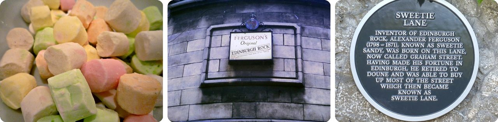
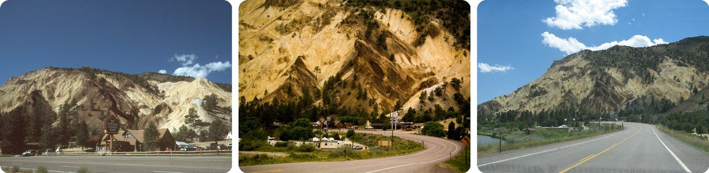

🌍 Top 10 Sucre candi
24 novembre 2026
1. 🍬 Le mot « candy » désignait d'abord le sucre candi
 Le sucre candi, c'est juste du sucre qu'on fait pousser en gros cristaux. On dissout énormément de sucre dans de l'eau chaude, bien plus que de l'eau froide ne pourrait en contenir. En refroidissant, le sucre en trop ne sait plus où aller, alors il s'accroche à une ficelle ou à un bâtonnet et forme des cristaux. Il faut environ six à sept jours.
Le sucre candi, c'est juste du sucre qu'on fait pousser en gros cristaux. On dissout énormément de sucre dans de l'eau chaude, bien plus que de l'eau froide ne pourrait en contenir. En refroidissant, le sucre en trop ne sait plus où aller, alors il s'accroche à une ficelle ou à un bâtonnet et forme des cristaux. Il faut environ six à sept jours.
On fait ça depuis très, très longtemps. Dans la première moitié des années 800, il y a plus de 1 100 ans, des auteurs du monde musulman décrivaient déjà comment faire pousser des cristaux de sucre de cette façon.
Et voilà le plus drôle : l'anglais « sugar candy » vient du vieux français « çucre candi », qui vient de l'arabe qandi, du persan qand (« sucre de canne »), et sans doute du sanskrit khanda (« morceau de sucre »). Ce n'est que plus tard que « candy » a voulu dire n'importe quelle friandise.
En gros, tous les bonbons portent le nom de celui en cristal.
2. 🇯🇵 L'armée japonaise met des konpeitō dans ses boîtes de rations
 Les konpeitō sont de minuscules étoiles de sucre toutes bosselées, venues du Japon, de 5 à 10 mm, la taille d'un petit pois. Chacune commence par un seul grain de gros sucre. Des artisans font tourner les grains dans une grande cuve chauffée en forme de gong et y versent du sirop sans arrêt, alors ils grossissent un peu chaque jour.
Les konpeitō sont de minuscules étoiles de sucre toutes bosselées, venues du Japon, de 5 à 10 mm, la taille d'un petit pois. Chacune commence par un seul grain de gros sucre. Des artisans font tourner les grains dans une grande cuve chauffée en forme de gong et y versent du sirop sans arrêt, alors ils grossissent un peu chaque jour.
C'est lent : une fournée prend de 7 à 13 jours. C'est pour ça que des artisans les fabriquent encore à la main aujourd'hui.
Les rations de secours de l'armée japonaise en contiennent, avec du pain dur et sec. Le règlement précise même les couleurs : 8 blancs, 3 rouges, 2 jaunes et 2 verts. Le bonbon fait saliver, et ça aide à mâcher le pain sec.
Imagine un bonbon qui a un vrai travail.
3. 🇮🇷 En Iran, le thé s'accompagne d'un bâtonnet de sucre candi au safran
 En Iran, la façon la plus courante de sucrer le thé, c'est le nabat, du sucre candi qu'on fait pousser sur des bâtonnets ou des ficelles. Le parfum préféré est le safran, qui rend les cristaux dorés et un peu amers. On le grignote avec le thé ou on le met dedans pour le sucrer.
En Iran, la façon la plus courante de sucrer le thé, c'est le nabat, du sucre candi qu'on fait pousser sur des bâtonnets ou des ficelles. Le parfum préféré est le safran, qui rend les cristaux dorés et un peu amers. On le grignote avec le thé ou on le met dedans pour le sucrer.
L'Iran en produit énormément. La plupart vient de la province du Khorassan-e Razavi, qui en a fabriqué plus de 210 000 tonnes par an dans les années 2020, le poids d'environ 20 tours Eiffel.
Juste à côté, en Asie centrale, la même friandise s'appelle novvot. En Ouzbékistan, on le fait parfois avec du jus de raisin au lieu de l'eau, et ses cristaux poussent pendant trois jours. L'UNESCO l'a inscrit au patrimoine culturel de l'Ouzbékistan.
Une cuillère à sucre que tu n'as jamais besoin de laver.
4. 🇨🇳 Une légende chinoise dit que le sucre candi a guéri la favorite d'un empereur
 Les tanghulu sont des baies d'aubépine enrobées de sucre brillant sur une brochette en bambou, un grand classique de la rue dans le nord de la Chine. Leur autre nom est bīngtáng húlu (冰糖葫芦). Bīngtáng, c'est le sucre candi, et húlu veut dire gourde, à cause de la forme bosselée de la brochette.
Les tanghulu sont des baies d'aubépine enrobées de sucre brillant sur une brochette en bambou, un grand classique de la rue dans le nord de la Chine. Leur autre nom est bīngtáng húlu (冰糖葫芦). Bīngtáng, c'est le sucre candi, et húlu veut dire gourde, à cause de la forme bosselée de la brochette.
La légende remonte à la dynastie Song, il y a environ 800 ans. La concubine préférée d'un empereur était malade et refusait de manger. Un médecin a demandé aux cuisiniers de cuire des baies d'aubépine avec du sucre candi et de lui en faire manger cinq à dix avant chaque repas. En quelques jours, elle allait mieux, et les gens ont commencé à vendre ces baies en brochettes dans la rue.
Dans la Chine d'autrefois, le sucre candi était un luxe réservé aux familles riches. Aujourd'hui, là-bas, c'est un produit de cuisine tout à fait normal, qu'on met dans le thé, les soupes sucrées et les plats.
Autrement dit, un remède royal est devenu un snack de rue.
5. 🇩🇪 En Frise orientale, on ne remue jamais son thé
 La Frise orientale, une région côtière du nord-ouest de l'Allemagne, est folle de thé : elle boit presque 75 % de tout le thé importé en Allemagne. Et elle a des règles strictes pour le boire.
La Frise orientale, une région côtière du nord-ouest de l'Allemagne, est folle de thé : elle boit presque 75 % de tout le thé importé en Allemagne. Et elle a des règles strictes pour le boire.
D'abord, un morceau de sucre candi blanc appelé Kluntje va dans la tasse vide. Ensuite, on verse dessus un thé chaud et fort. Puis on ajoute une cuillerée de crème épaisse, qui s'étale comme un « nuage » appelé Wölkje. La crème, c'est le nuage, le thé, c'est l'eau, et le sucre, c'est la terre.
Ensuite, on boit sans remuer, pour goûter trois couches : d'abord la crème, puis le thé, et enfin le sucré au fond. Remuer mélangerait tout en un seul goût, et ça ne se fait pas. Le Kluntje fond si lentement qu'il peut sucrer plus d'une tasse.
En gros, c'est un menu en trois services dans une tasse de thé.
6. 🇬🇧 Les lettres du « rock » de Blackpool ne sont pas faites dans l'ordre
 Le « rock » des stations balnéaires britanniques n'est pas du sucre candi. C'est un bâton dur de sucre cuit, souvent à la menthe, avec le nom de la ville qui le traverse de bout en bout, alors on peut encore le lire après chaque bouchée. Dans les années 1830, Morecambe a été la première ville à fabriquer du rock avec des lettres à l'intérieur.
Le « rock » des stations balnéaires britanniques n'est pas du sucre candi. C'est un bâton dur de sucre cuit, souvent à la menthe, avec le nom de la ville qui le traverse de bout en bout, alors on peut encore le lire après chaque bouchée. Dans les années 1830, Morecambe a été la première ville à fabriquer du rock avec des lettres à l'intérieur.
Chaque lettre commence à peu près de la taille d'une empreinte de pouce, faite de bandes de sucre colorées et blanches. On ne les fabrique pas dans l'ordre de l'orthographe. Les lettres « carrées » comme B, L et K passent en premier, car elles gardent leur forme. Les rondes comme O et C sont faites en dernier pour ne pas s'affaisser.
On place les lettres autour d'un cœur blanc, puis on enroule le tout en une énorme barre encore tiède, si épaisse qu'on ne peut pas en faire le tour avec les mains. Un ouvrier l'étire ensuite en une longue corde fine, et les lettres rétrécissent jusqu'à leur toute petite taille finale. Tout le rock à lettres est encore fait à la main.
Imagine écrire un mot, puis l'étirer jusqu'à en faire un bonbon.
7. 🏴 Le rock d'Édimbourg aurait été découvert par oubli

Le rock d'Édimbourg n'est pas dur du tout. Il est tendre et friable, fait de sucre, d'eau et de crème de tartre, et se présente en bâtonnets pastel, parfumés au gingembre ou au citron par exemple.Il a été fabriqué pour la première fois au XIXe siècle par Alexander Ferguson, surnommé « Sweetie Sandy » (« Sandy les bonbons »). Une histoire célèbre raconte qu'il a trouvé un plateau de bonbons oublié depuis des mois. Ils avaient séché, il en a goûté un, et c'était délicieux. Personne ne sait si c'est vrai.
Ce qui est sûr : ça s'est si bien vendu qu'il est rentré dans sa petite ville de Doune très riche. Une plaque là-bas dit qu'il a racheté presque toute la rue où il était né, qui a pris le nom de Sweetie Lane (« la ruelle des bonbons »).
Un heureux accident qui se mange.
8. 🇮🇳 Une confiserie de Delhi vend des douceurs au sucre candi depuis 1790
 En Inde, le sucre candi s'appelle mishri. On le mange comme un bonbon ou on s'en sert pour sucrer le lait et le thé. On le cuisine aussi en douceurs lactées avec du khoya (du lait cuit jusqu'à devenir épais), comme le mishri-mawa, qu'on appelle aussi kalakand.
En Inde, le sucre candi s'appelle mishri. On le mange comme un bonbon ou on s'en sert pour sucrer le lait et le thé. On le cuisine aussi en douceurs lactées avec du khoya (du lait cuit jusqu'à devenir épais), comme le mishri-mawa, qu'on appelle aussi kalakand.
Une confiserie de Delhi, Ghantewala Halwai, a commencé en vendant du mishri-mawa en 1790, il y a plus de 230 ans. Aujourd'hui, elle vend 40 sortes de douceurs faites avec du mishri.
Ces douceurs au lait sont surtout populaires dans le nord et l'ouest de l'Inde, dans des endroits comme Delhi, le Rajasthan, le Pendjab et le Gujarat.
Autrement dit, une boutique vend la même douceur depuis plus de 230 ans.
9. 🇺🇸 Le premier bonbon vendu comme un vrai commerce aux États-Unis est né d'un naufrage
 En 1806, la famille Spencer a quitté l'Angleterre pour Salem, dans le Massachusetts, mais un naufrage l'a laissée presque sans rien. Les nouveaux voisins se sont cotisés pour leur donner des provisions, dont un tonneau de sucre, parce que Mme Spencer était connue pour faire de bons bonbons.
En 1806, la famille Spencer a quitté l'Angleterre pour Salem, dans le Massachusetts, mais un naufrage l'a laissée presque sans rien. Les nouveaux voisins se sont cotisés pour leur donner des provisions, dont un tonneau de sucre, parce que Mme Spencer était connue pour faire de bons bonbons.
Elle a fabriqué des bonbons durs au citron et à la menthe, appelés Gibraltars, et les vendait sur les marches de la Première Église de la ville. Ils se sont si bien vendus qu'elle s'est acheté un cheval et une charrette pour aller les vendre dans les villes voisines. Le Gibraltar est considéré comme le premier bonbon fabriqué commercialement (pour être vendu, comme une vraie entreprise) aux États-Unis.
Les bonbons durs se gardent très longtemps s'ils restent au sec, alors des capitaines de navire emportaient des Gibraltars dans des ports du monde entier. À Salem, Ye Olde Pepper Companie en vend encore aujourd'hui.
Bref, le commerce des bonbons en Amérique a commencé par un cadeau des voisins.
10. 🎵 « Big Rock Candy Mountain » parlait d'abord de fugue

« The Big Rock Candy Mountains » (« Les grandes montagnes de sucre candi ») est une chanson folk sur le monde rêvé d'un hobo, un travailleur vagabond qui voyageait dans les trains de marchandises. Harry McClintock disait l'avoir écrite en 1895, et il l'a enregistrée en 1928.La version qu'il chantait dans la rue dans les années 1890 était plus sombre. Elle racontait comment on entraînait un enfant dans la vie de vagabond avec des histoires de montagne en sucre candi. Il l'a nettoyée avant de l'enregistrer.
Puis on l'a encore nettoyée pour les enfants. Dans les versions pour enfants, les « arbres à cigarettes » sont devenus des arbres à menthe, les ruisseaux d'alcool sont devenus de la limonade et le lac de whisky est devenu un lac de soda. Une version pour enfants de Burl Ives, en 1949, l'a rendue célèbre.
Une chanson d'adultes devenue berceuse du pays des bonbons.
Le saviez-vous ?
Le konpeitō a déjà aidé à ouvrir des portes au Japon. En 1569, un missionnaire portugais, Luís Fróis, a offert au seigneur de guerre Oda Nobunaga un flacon en verre rempli de konpeitō pour obtenir la permission de prêcher le christianisme. Des siècles plus tard, ce bonbon était si aimé qu'en japonais, la Fée Dragée du ballet Casse-Noisette de Tchaïkovski est devenue Konpeitō no Sei (金平糖の精), « la fée du konpeitō ». Les douceurs cachées dans Casse-Noisette, des dragées à la pâte d'amande, sont tout un monde à explorer la prochaine fois.
Crédits photo (Wikimedia Commons)
- #1: Kandiszucker -- 2018 -- 3588.jpg by Dietmar Rabich, CC BY-SA 4.0
- #1: Rock-Candy-Sticks.jpg by Evan-Amos, CC BY-SA 3.0
- #1: Rock candy (flickr) by Biker Jun, CC BY-SA 2.0
- #2: Konpeito Candy.jpg by Islandsislands, CC0
- #2: #012 Konpeito taken by EX-Z40 (flickr) by aki.sato, CC BY-SA 2.0
- #2: Konpeito, Nishiki Market.jpg by Owleksandra, CC BY-SA 4.0
- #3: Iranian nabat.jpg by Teardrops777, CC BY 4.0
- #3: Saffron rock candy.jpg by Rye-96, CC BY-SA 4.0
- #3: Tea time at historic Chah-e Haji Mirza Café in Isfahan. Persian tea served with goshe fil and nabat.jpg by EiersalatmitGurken, CC0
- #4: TangHuLu.JPG by Popo le Chien, CC0
- #4: Guangxi old rock candy.jpg by Fumikas Sagisavas, CC0
- #4: Tanghulu-shanghai.jpg by Zhu Jian / Flickr user: zhu4905jian ( https://www.flickr.com/photos/7672101@N06/ ), CC BY 2.0
- #5: Tee mit sahnewolke.JPG by Ke.We., CC BY 3.0
- #5: Ostfriesentee.jpg by Frank van Anken, CC BY-SA 3.0
- #5: Kandiszucker -- 2018 -- 3590.jpg by Dietmar Rabich, CC BY-SA 4.0
- #6: Blackpool Rock (15107520364).jpg by Hazel Scott from Sheffield, UK, CC BY 2.0
- #6: Blackpool Rock (flickr) by Kate C Hopkins, CC BY 2.0
- #6: Brighton Rock (6950629923).jpg by Paul Hudson from United Kingdom, CC BY 2.0
- #7: Edinburgh Rock.jpg by The original uploader was Mebanana at English Wikipedia., Public domain
- #7: Ferguson's Edinburgh Rock advertisement (1982).JPG by Kim Traynor, CC BY-SA 4.0
- #7: Sweetie Lane heritage plaque.jpg by LocalMapEditor, CC BY-SA 4.0
- #8: Fennel seeds and rock sugar, Indian aftermint.jpg by Connie Ma from Chicago, United States of America, CC BY-SA 2.0
- #8: Misri.JPG by Miansari66, Public domain
- #8: Kalakand2.JPG by Pradeep717, CC BY-SA 3.0
- #9: Gibralters Candy Wrapper.jpg by Eanalla, CC0
- #9: Ye Olde Pepper Company, 122 Derby St, Salem (493760) (flickr) by Bob Linsdell, CC BY 2.0
- #9: Ye Olde Pepper Companie (flickr) by Kate C Hopkins, CC BY 2.0
- #10: Big Rock Candy Mountain Marysvale Utah 19970724.jpg by Jstuby, CC0
- #10: Big Rock Candy Mountain (19546490).jpg by Liji Jinaraj from San Francisco, USA, CC BY-SA 2.0
- #10: Big Rock Candy Mountian - panoramio.jpg by hakkun, CC BY-SA 3.0


.jpg){kind=link}
.jpg){kind=link}

.JPG){kind=link}


.jpg){kind=link}